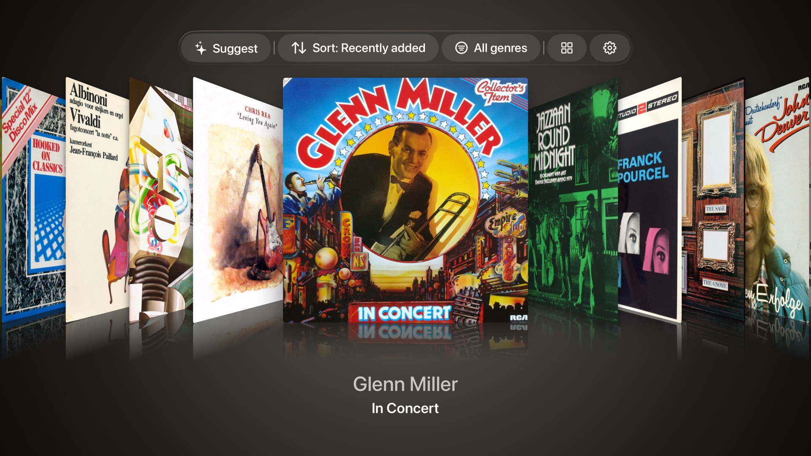
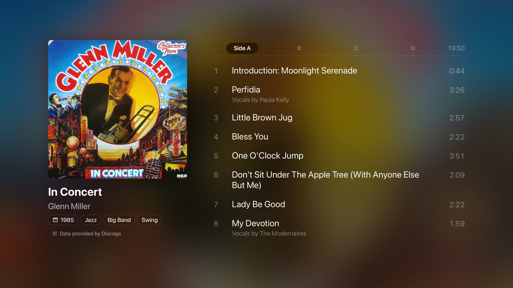

How to use
Each screen of the app, what it shows and the Siri Remote controls you use on it.
Each row of the table is one screen. The drawing in the Controls column shows the Siri Remote, numbered for that screen only. The list under the drawing says what each numbered control does there.
The clickpad is the touch pad on top of the remote. A swipe is a slide of your thumb across it, and a press is a click. The highlight is the selected item, the one that a press chooses. Back (the ‹ button) is number 6 on the drawings.
The app shows the records in your collection on Discogs (the online record database). A tracklist is the list of songs on one side. A side is one face of a record, such as Side A or Side B, as the record defines them. The toolbar is the row of on-screen buttons at the top of the gallery.
| Screen | Screenshot with description | Controls |
|---|---|---|
| Gallery, “CoverFlow” view (default) |
 CoverFlow is the default view. The highlighted record sits in the centre, with its artist and title below it. Its colours tint the background. Swipe left or right to move one record at a time. |
|
| Gallery, “Grid” view |

Grid shows seven albums in each row. The highlighted album grows and shows its artist and title in a panel below it. The grid never shows the halo. |
|
| Gallery toolbar: “Suggest”, “Sort”, “Genre”, “Layout” and “Settings” |
Screenshot to follow The toolbar sits at the top of the gallery. “Suggest”, “Sort”, “Genre” and the layout button appear once the library has records. The gear at the end opens the “Settings menu”. “Suggest” opens a random record from the records shown, after any genre filter. “Sort” puts the records in order by “Recently added” (the default), “Artist”, “Album” or “Year”. “Genre” lists every genre and style in your collection. Choosing one shows the records that have it. “All genres” clears the filter. The layout button switches between CoverFlow and Grid. The sort and layout are remembered between launches; the genre filter is not. |
|
| Record screen (tracklist view and cover view) |
 A record opens on its tracklist view. The side selector above the tracklist shows Side A, Side B and so on, with the current side highlighted. The cover view shows the cover full screen. After a change of side, a short message such as “Side B” appears for 2 seconds. The halo is a soft glow of colour from the cover. It turns off with each swipe and comes back after a pause. On the record screen’s cover view, it returns 3 seconds after the last swipe. In CoverFlow, it returns 60 seconds after the last swipe. This happens when “Engage halo automatically” is on, which is the default. With “Engage halo automatically” off, the cover view shows a “Halo” button under the cover. Swipe up on the cover view to reach it, then press to turn the halo on or off. CoverFlow shows no halo in this mode. The app first shows the Discogs image. It then swaps in a better cover when it finds one. It finds covers through MusicBrainz (an open music database) and the Cover Art Archive, which holds cover images. |
|
| Discogs QR code (opened from the record screen) |
Screenshot to follow On the tracklist view, select the “Data provided by Discogs” line under the cover details. The screen shows a QR code of the record’s page on discogs.com, with the words “Scan with your phone”. Scan the code with a phone to open that page. |
|
| Settings menu |
Screenshot to follow The Settings menu opens from the gear at the end of the toolbar. It lists these items, from top to bottom.
|
|
| About |
Screenshot to follow About shows the app name and version, the privacy policy, support and email addresses, and the Discogs notice. Nothing on this screen can be selected. The addresses are plain text, to type on a phone or computer, because the Apple TV has no browser. |
|
| Sign-in (welcome, code and building your library) |

The welcome screen has the “Sign in with Discogs” button. If Discogs stops accepting the app’s access, this screen returns with a notice. Your library stays on the Apple TV. 
The code screen shows a QR code to scan with a phone, and three steps to follow on the phone. Enter the code that Discogs shows you in the “Verification code” box. “Continue” is unavailable until a code is typed. 
The Apple TV shows its on-screen keyboard for the “Verification code” box. Choose done when the code is typed. Screenshot to follow After your first sign in, or after you erase the library, the app builds your library. The screen counts the progress, for example “Fetching 247/812 albums…”. If the build fails, “Retry” starts it again, and “Continue anyway” opens the gallery. |
|